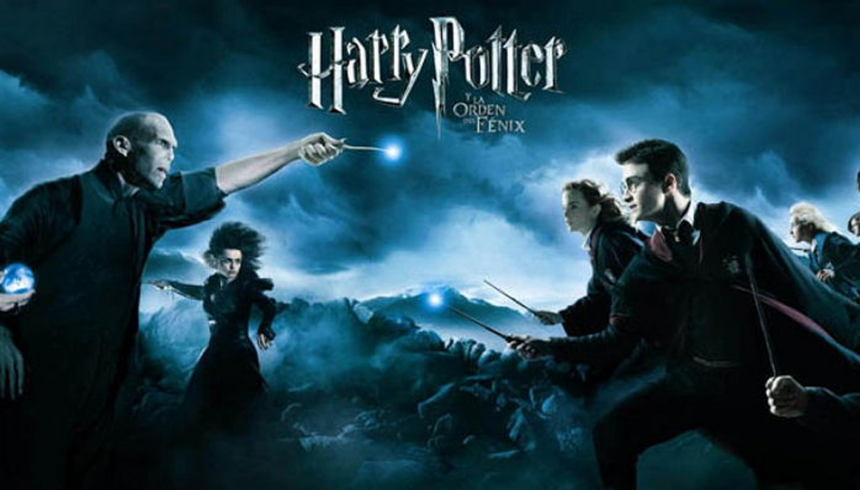

《해리 포터》(Harry Potter)
는 1997년부터 2016년까지 연재된 영국의 작가 J.K. 롤링의 판타지 소설 시리즈다.
이모네 집 계단 밑 벽장에서 생활하던 11살 소년 해리 포터가 호그와트 마법학교에 가면서 겪게 되는 판타지 이야기를 그리고 있다.
1997년 6월 첫 번째 책인 《해리 포터와 마법사의 돌》이 출판되었으며, 2007년 7월 일곱 번째 책인 《해리 포터와 죽음의 성물》이 출판되었다.
해리포터 시리즈가 큰 성공을 거두면서 전 세계적으로 인기를 얻었으며, 영화를 비롯한 다양한 상품들이 제작되었다. 해리 포터 소설은 역사상 성경 다음으로 가장 많이 팔린 책이다.
2016년 7월 31일 해리 포터와 그의 아들에 관한 이야기를 담고 있는 여덟 번째 이야기《해리 포터와 저주받은 아이》가 출판되었으며, 2017년 10월 23일 한국어 판이 출판 되었다.
《해리 포터와 저주받은 아이》는 소설판이 아닌 연극용으로만 만들어진 것이기 때문에 연극용 대본판만 있다. 하지만, 원래 해리 포터의 작가 조앤 K.
롤링은 해리 포터를 쓰기 전에는 국가에서 지원을 받는 저소득층으로 기초유급자 생활을 하고 있었다.
하지만 롤링이 집 근처 카페에서 해리포터와 마법사의 돌을 완성하고 블룸즈베리 출판사에 책을 출판한 후 이 책은 지금까지 4억 부 이상이 팔렸으며,
《해리 포터》는 《반지의 제왕》, 《나니아 연대기》와 같은 유명 판타지 소설 책으로 평가 받는다.
책이 나오는 날이면, 독자들이 추운 날씨나 더운 날씨 마다하지 않고 서점이 열 때까지 기다려서 책을 사고, 해리포터 책이 판매 시작되는 날이면 교통이 마비되고, 서점은 늦게까지 문을 연다.
해리 포터 소설은 보통 어린이를 대상으로 한 작품으로 여겨지지만, 거의 모든 연령대에 걸쳐 독자 층을 형성하고 있으며,
그 근거로 어른들도 공공 장소에서 거리낌 없이 읽을 수 있도록 디자인 된 표지로 출간된 바가 있다.
소설을 바탕으로 워너 브라더스에서 영화로 제작하여 2001년 첫 영화가 개봉되었으며, 2011년까지 여덟 편의 영화가 개봉되었다.
작가 롤링에 따르면 그녀는 맨체스터에서 런던으로 가는 기차 안에서 처음 이 이야기를 떠올려, 에딘버러에 있는 작은 카페에서 어린 딸을 어르며 연작의 첫 권을 썼다고 한다.
그 뒤 책의 인세 및 영화나 관련 상품의 로열티를 통해 롤링은 2004년 《포브스》가 발표한 세계의 부자 순위 552위에 올랐으며,
[1] 영국 여왕보다도 더 큰 부자가 되었다.
[2] 2007년 포보스지가 조사한 결과에서 세계 부자 순위 663위에 올라 있다고 한다.
<더 자세히 알아보기>
